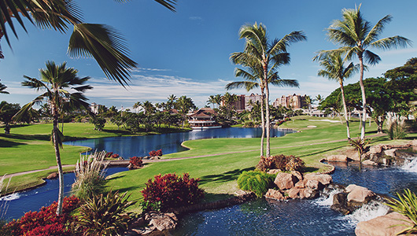
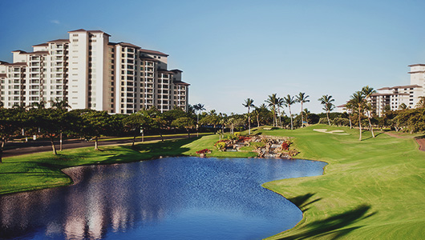

미국 내 ‘Top 75 리조트 코스’로 선정 [Golf Digest]
LPGA TOUR 2018 ‘Lotte Championship’ 개최지
미국 하와이 오아후섬의 서쪽 코올리나에 위치하며, 오아후섬 최고의 골프 코스 중의 하나로 알려져 있는 코올리나 클럽은 일본항공(,JAL)의 자회사인 이힐리니호텔 부속 골프장이기도 하다. 클럽 주변의 아름다운 경관을 배경으로 멋진 플레이를 즐길 수 있는 하와이에서 반드시 가 봐야 할 코스 중 하나이다.

골프 다이제스트지가 선정한 세계 85대 리조트 코스에 이름을 올린 곳으로, 아름다운 하와이의 바다를 배경으로 펼쳐진 18홀 코스는 ‘물의 마술사’로 알려진 세계적인 골프 코스 설계가 테드 로빈슨의 대표작 중 하나로, 연못과 계곡 등 자연 그대로의 지형을 살린 점이 특히 돋보이며, 1947년에 폐쇄된 철로가 그대로 남아 있어 운치를 더한다.

2015년과 2016년에 김세영, 이민지 선수가 우승컵을 들어 올리며 한국인에게도 친숙한 골프 클럽이며 8개의 워터 해저드와 70여 개의 벙커가 골퍼들에게 긴장감과 스릴을 느낄 수 있도록 설계해 놓았다. 특히 8번 홀과 18번 홀이 시그니처 홀로 뷰가 아름다울 뿐만 아니라 양쪽의 워터 해저드와 경사가 가파른 2단 그린이 난이도를 더하여 플레이어들에게 도전해 볼만한 코스로 알려져 있다.
Travel Tip
골프장 주변으로 다수의 고급 리조트가 있어 라운드 후 리조트에서 여유로운 휴식을 취할 수 있는 것이 특징이며, 카폴레이의 아름다운 해변과 라군 풍경을 즐기며 다이닝과 수상 스포츠, 선탠 등을 즐길 수 있다.
여유로운 휴식을 겸한 골프 여행을 준비한다면 포시즌스 리조트를, 어린 자녀를 동반한 가족여행을 준비한다면 아울라니 디즈니 리조트를 추천한다.